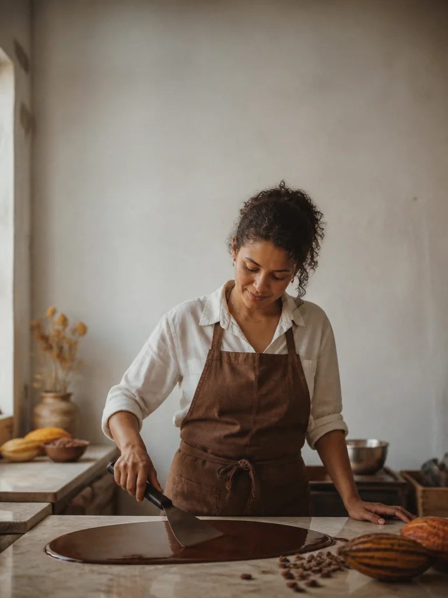
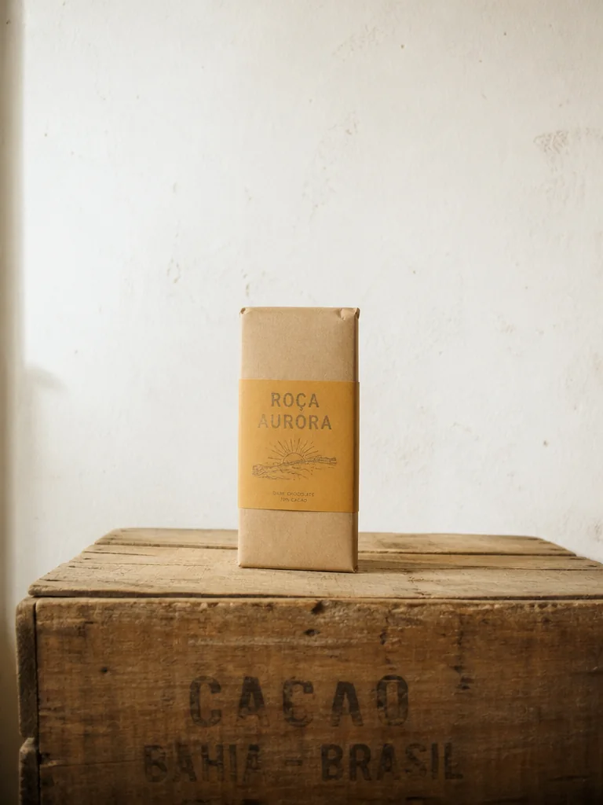
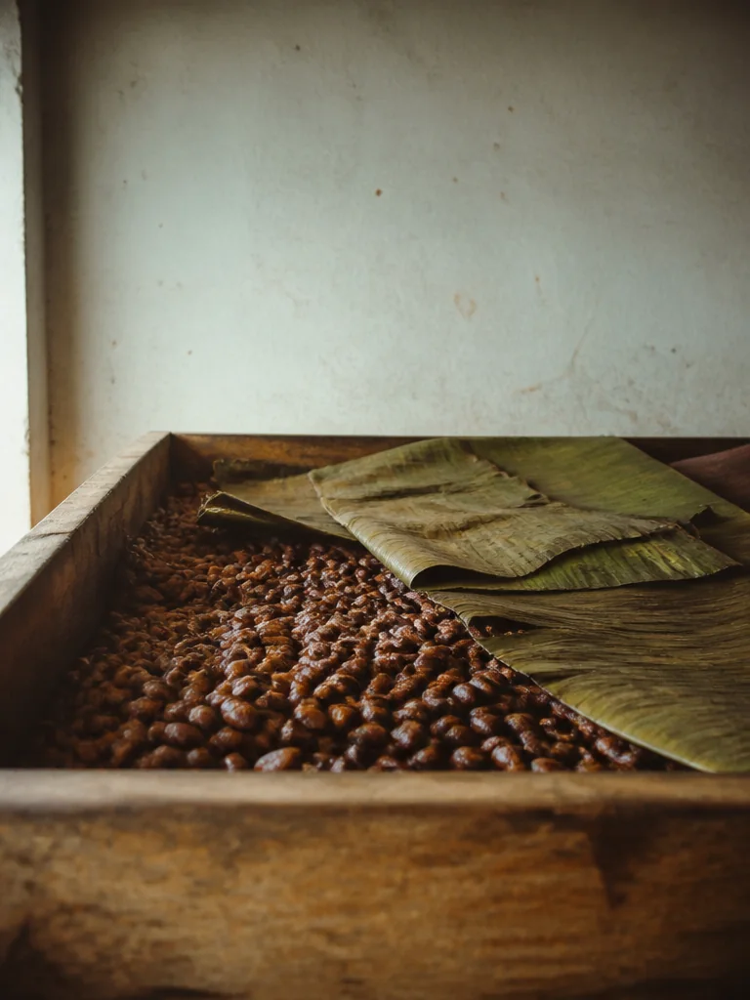
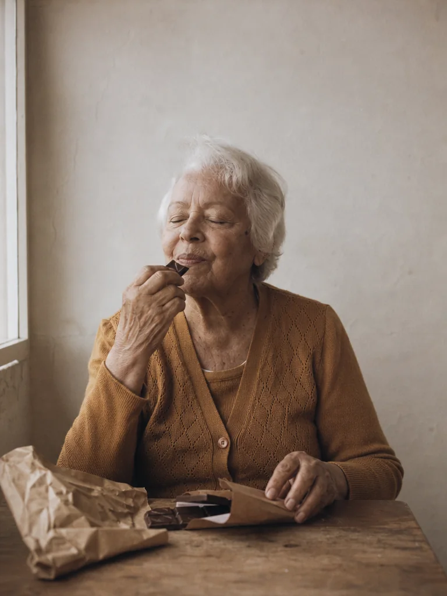
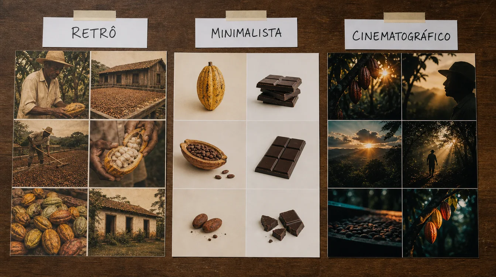
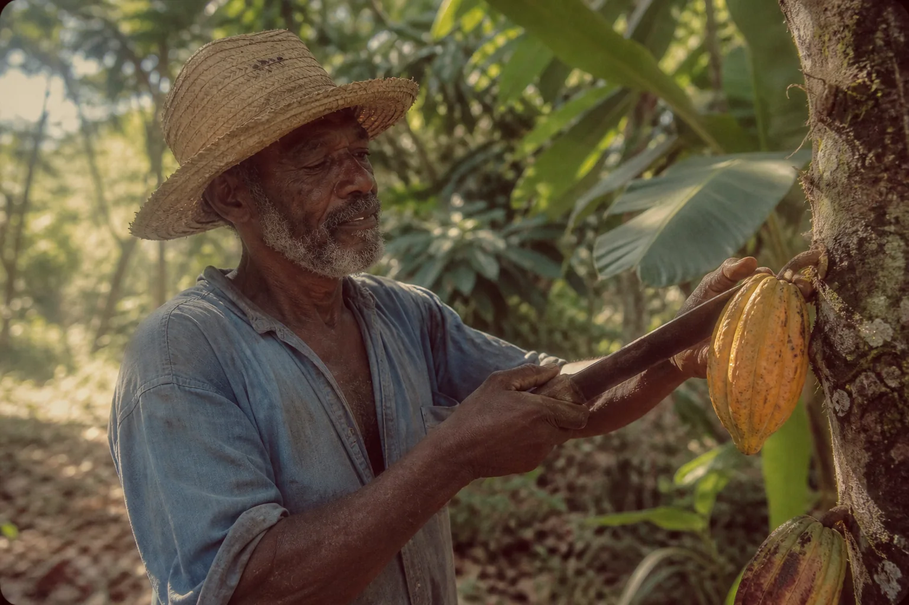
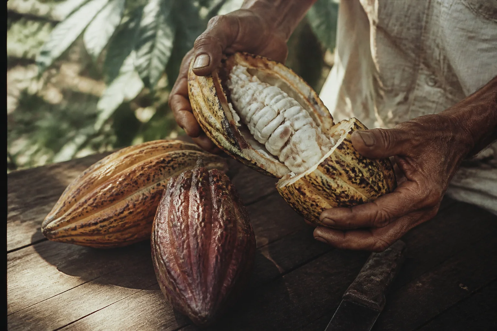
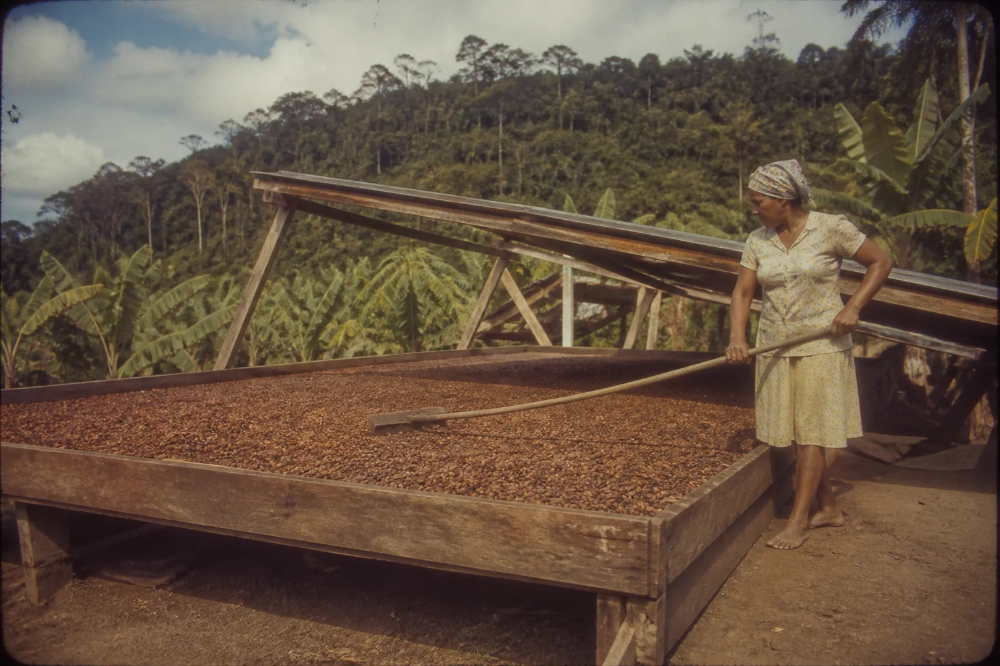
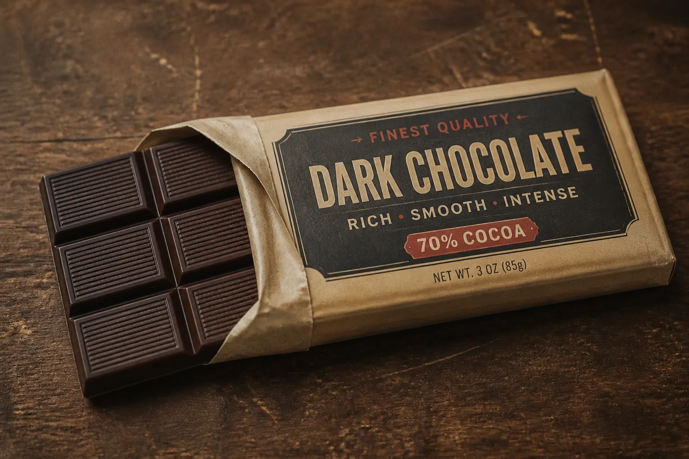
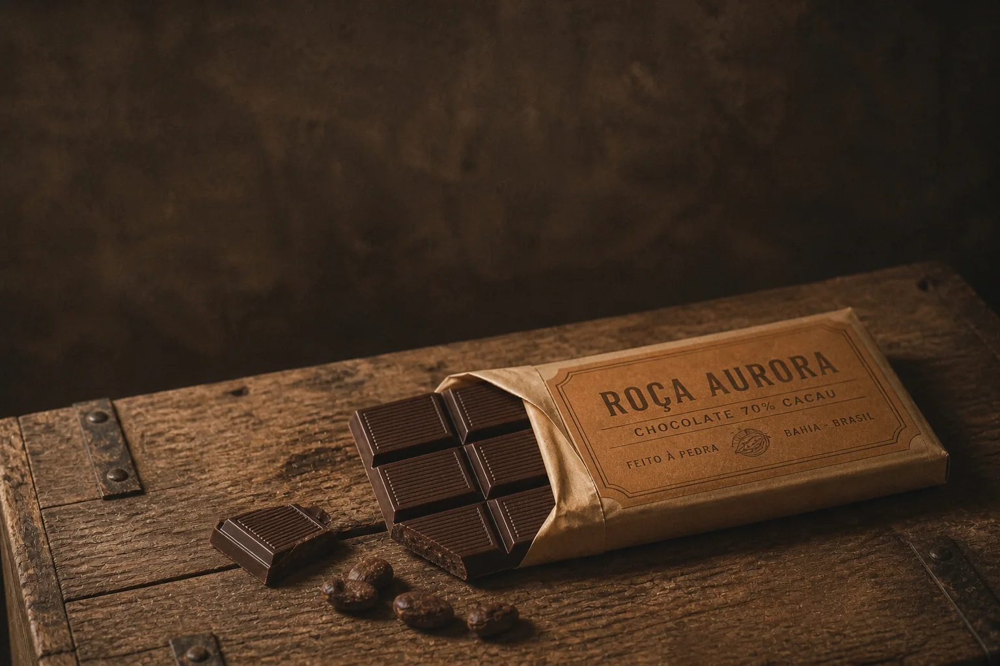

O caderno de olhar é o registro de como você passou a enxergar. Ele junta tudo o que o curso pediu — observar, nomear, decidir, estudar, fixar regras — num único documento que mostra o raciocínio, não só o resultado. É isso que um cliente, um diretor de arte ou você mesmo, daqui a seis meses, precisa ver para confiar nas suas escolhas.
Para mostrar como fica, acompanhamos o caderno de um projeto fictício: a Roça Aurora, marca de chocolate de origem feita com cacau cabruca do sul da Bahia. O objetivo do projeto é vender barras numa loja on-line para quem valoriza procedência; a emoção-alvo é confiança calorosa — “isso foi feito por gente de verdade, num lugar de verdade”.

Prompt usado
A Brazilian chocolate maker in her 30s with curly hair tied back, a brown canvas apron over a white shirt, tempering melted dark chocolate with a steel spatula on a marble slab in a small craft chocolate workshop in Ilhéus. She is the only subject; plain whitewashed wall behind her; the upper third of the frame is calm empty wall. STYLE BLOCK: 1970s color negative film photograph; warm faded tones, soft contrast, lifted milky blacks; single natural daylight from a window on the LEFT; visible fine grain and a gentle vignette; earthy palette of cacao brown, cream and kraft, with faded ochre as the only accent; 35mm lens at eye level; candid, honest mood. No text.

Prompt usado
A single dark chocolate bar in a kraft paper wrapper with a hand-stamped faded ochre label reading 'ROÇA AURORA', standing upright on an old wooden cacao crate. It is the only object; plain whitewashed wall behind; the upper third of the frame is calm empty wall. STYLE BLOCK: 1970s color negative film photograph; warm faded tones, soft contrast, lifted milky blacks; single natural daylight from a window on the LEFT; visible fine grain and a gentle vignette; earthy palette of cacao brown, cream and kraft, with faded ochre as the only accent; 35mm lens at eye level; candid, honest mood.

Prompt usado
A shallow wooden box of fermenting cacao beans covered halfway with banana leaves, seen from eye level at the edge of the box, the beans glistening brown and purple, in a simple farm shed. It is the only subject; plain whitewashed wall behind; the upper third of the frame is calm empty wall. STYLE BLOCK: 1970s color negative film photograph; warm faded tones, soft contrast, lifted milky blacks; single natural daylight from a window on the LEFT; visible fine grain and a gentle vignette; earthy palette of cacao brown, cream and kraft, with faded ochre as the only accent; 35mm lens at eye level; candid, honest mood. No text.

Prompt usado
An older Brazilian woman in her 70s with short white hair and a faded ochre cardigan, sitting at a small wooden table and breaking a square of dark chocolate from a kraft-wrapped bar, smiling slightly with her eyes closed as she tastes it. She is the only subject; plain whitewashed wall behind her; the upper third of the frame is calm empty wall. STYLE BLOCK: 1970s color negative film photograph; warm faded tones, soft contrast, lifted milky blacks; single natural daylight from a window on the LEFT; visible fine grain and a gentle vignette; earthy palette of cacao brown, cream and kraft, with faded ochre as the only accent; 35mm lens at eye level; candid, honest mood. No text.
O ponto de chegada: a série final da Roça Aurora, quatro gerações independentes com o mesmo bloco de estilo e as mesmas cinco regras pessoais. Assuntos diferentes, uma só voz visual. O resto do módulo mostra o caminho até ela.
1O mapa do caderno
O que é
Por que aprender
Uma série bonita sem o caderno é indistinguível de sorte. Com o caderno, quem vê entende que cada imagem nasceu de uma decisão tomada antes — e que você consegue repetir o resultado com outro assunto, outro cliente, outra semana. É a diferença entre mostrar um portfólio e mostrar um método.
Como escolher o projeto do caderno:
- Real ou quase real: seu negócio, um cliente, ou uma marca do nicho em que você quer trabalhar. Projeto inventado sem público não testa a cadeia objetivo → emoção.
- Assuntos variados: precisa ter pelo menos pessoa, produto e ambiente. Uma marca que só tem um objeto não testa a consistência.
- Uso definido: saiba onde as imagens vão aparecer (feed 4:5, site 3:2, anúncio). Isso decide formato e espaço para texto antes da primeira geração.
- Tamanho possível: uma semana, 4–6 imagens finais. Grande o bastante para exigir regras, pequeno o bastante para terminar.
Conceitos-chave em ação
O que entra em cada seção
| Seção | Entrega | Evidência de que funcionou |
|---|---|---|
| 1. Boards | 3 boards de estéticas diferentes, 5–7 traços anotados em cada | os traços são específicos (luz, paleta, textura, composição, clima) |
| 2. Palavras-chave | 10 palavras ou expressões de prompt, testadas | cada palavra tem uma imagem que mostra o efeito |
| 3. Imagens consistentes | 3 imagens da estética escolhida com o mesmo bloco de estilo | lado a lado, parecem da mesma campanha |
| 4. Recriação | antes/depois de uma referência recriada, com as camadas mudadas | o depois se aproxima da referência por decisões nomeadas |
| 5. Regras | 5 regras pessoais, cada uma com a observação de origem | cada regra aparece visivelmente na série |
| 6. Série | 4–6 imagens aplicando as regras, com prompts | passa na rubrica (tópico 7) |
2Três boards, três estéticas
O que é
Monte três boards para o mesmo projeto, cada um numa família estética diferente. Não é para escolher a mais bonita ainda: é para ver o seu assunto falando três línguas. Embaixo de cada board, liste de 5 a 7 traços — luz, paleta, textura, composição, clima — no formato de anotação que você aprendeu (específico, verificável).

Prompt usado
Overhead photograph of three small mood boards laid side by side on a dark wooden table, each board a 2x3 grid of six printed photographs about a small cacao farm and chocolate brand in southern Bahia, Brazil, with a white paper label taped above each board, handwritten in black marker: 'RETRÔ' on the left board, 'MINIMALISTA' in the middle, 'CINEMATOGRÁFICO' on the right. Left board: faded warm film photos of farm workers with straw hats, old wooden cacao drying racks, sepia and ochre tones, visible grain. Middle board: a single yellow cacao pod on plain beige, clean dark chocolate bars on white, lots of empty space, soft light. Right board: dramatic low sun through the cacao forest canopy, silhouettes, deep teal-and-orange contrast, shallow focus. Soft daylight on the table. No other text.
Os três boards da Roça Aurora, lado a lado: retrô (fotos quentes e desbotadas de produtores e secadores de madeira), minimalista (um fruto de cacau sobre bege, barras limpas, muito espaço) e cinematográfica (sol baixo atravessando a mata, silhuetas, contraste).
Por que aprender
Traços anotados de cada board
| Traço | Retrô | Minimalista | Cinematográfico |
|---|---|---|---|
| Luz | luz do dia natural, contraste baixo | luz grande e difusa, quase sem sombra | sol baixo e duro, sombras profundas |
| Paleta | marrom-cacau, verde-folha, ocre desbotado | bege, branco, marrom do chocolate | verde-azulado contra laranja do sol |
| Textura | grão de filme, pretos lavados, vinheta | superfícies lisas, fundo contínuo | profundidade rasa, halo nas luzes |
| Composição | cândida, pessoas trabalhando | um objeto, muito espaço vazio | silhuetas, camadas de mata |
| Clima | memória, honestidade | calma, premium | épico, importante |
| Meta-mensagem | “feito por gente de verdade” | “produto sofisticado” | “uma história grande” |
Conceitos-chave em ação
Com a tabela montada, a decisão fica fácil de justificar: a emoção-alvo da Roça Aurora é confiança calorosa e procedência. A linha “meta-mensagem” mostra que a retrô diz exatamente isso; a minimalista diz “sofisticado” (bom, mas frio para uma marca de roça); a cinematográfica diz “épico” (bonita, mas exagerada para uma barra de chocolate). Escolha: retrô / vintage.
3Dez palavras-chave: sua biblioteca visual
O que é
Da estética escolhida, extraia dez palavras-chave — expressões curtas, em inglês, que você cola no prompt. Cubra as cinco categorias (luz, paleta, textura, composição, clima) e teste cada uma: gere com e sem a palavra e anote o que ela realmente faz. Palavra que não muda nada sai da lista.
Por que aprender
Biblioteca da Roça Aurora (estética retrô)
| # | Palavra-chave | Categoria | Efeito observado |
|---|---|---|---|
| 1 | 1970s color negative film photograph | textura / época | puxa toda a imagem para cor de filme antigo |
| 2 | warm faded tones | paleta | tira saturação e aquece os brancos |
| 3 | lifted milky blacks | textura | as sombras ficam acinzentadas, nunca pretas |
| 4 | visible fine grain | textura | grão visível sem virar ruído |
| 5 | gentle vignette | composição | cantos escurecidos levam o olho ao centro |
| 6 | single natural daylight from a window on the left | luz | direção fixa em toda a série |
| 7 | earthy palette of cacao brown, cream and kraft | paleta | base de cor coerente |
| 8 | faded ochre as the only accent | paleta | um acento de cor, sempre o mesmo |
| 9 | 35mm lens at eye level | composição | olhar de pessoa, sem drama de ângulo |
| 10 | candid, honest mood | clima | gestos naturais, nada de pose de banco de imagem |
Conceitos-chave em ação
Para testar, use o mesmo método dos estudos: gere uma imagem com o bloco completo e outra idêntica sem a palavra que você está avaliando (ou peça uma edição que remove só aquele efeito). Coloque as duas lado a lado. Se você precisa de mais de dois segundos para achar a diferença, a palavra é fraca — troque por uma mais concreta (“faded” → “warm faded tones, lifted milky blacks”) ou tire da lista. Dez palavras fortes valem mais que trinta que o modelo ignora.
✓ Palavra que entra na biblioteca
- “lifted milky blacks” — muda algo visível e específico
- “faded ochre as the only accent” — controla a paleta
- “single daylight from the left” — pode ser conferida na imagem
✗ Palavra que não entra
- “beautiful”, “stunning” — não diz o que mudar
- “vintage vibes” — vago, cada geração interpreta de um jeito
- “high quality, 8k” — não é decisão estética
4Três imagens consistentes
O que é
Transforme as dez palavras num bloco de estilo e gere três imagens de assuntos diferentes — uma pessoa, um detalhe, um ambiente. O bloco entra igual nas três; só muda a primeira frase do prompt.
Bloco de estilo v1 da Roça Aurora
STYLE BLOCK: 1970s color negative film photograph; warm faded tones, soft contrast, lifted milky blacks; natural daylight filtering through leaves from the left; visible fine grain, slight analog imperfections and a gentle vignette; earthy palette of cacao brown, banana-leaf green and faded ochre; 35mm lens at eye level; candid, honest mood. No text.
Por que aprender

Prompt usado
Medium shot of a Black Brazilian cacao farmer in his 60s with a gray stubble, straw hat and a faded blue work shirt, cutting a ripe yellow-orange cacao pod from the trunk with a short machete, in the shade of a cabruca cacao forest in southern Bahia. STYLE BLOCK: 1970s color negative film photograph; warm faded tones, soft contrast, lifted milky blacks; natural daylight filtering through leaves from the left; visible fine grain, slight analog imperfections and a gentle vignette; earthy palette of cacao brown, banana-leaf green and faded ochre; 35mm lens at eye level; candid, honest mood. No text.

Prompt usado
Close-up of weathered hands breaking open a ripe cacao pod on a rough wooden table, revealing the white pulp-covered cacao beans inside, a short machete and two more pods beside it. STYLE BLOCK: 1970s color negative film photograph; warm faded tones, soft contrast, lifted milky blacks; natural daylight filtering through leaves from the left; visible fine grain, slight analog imperfections and a gentle vignette; earthy palette of cacao brown, banana-leaf green and faded ochre; 35mm lens at eye level; candid, honest mood. No text.

Prompt usado
Wide shot of a traditional wooden cacao drying platform with a sliding roof (barcaça) in southern Bahia, cacao beans spread in a thin brown layer, a woman in her 40s with a headscarf raking them with a long wooden rake, cacao trees and a hill behind. STYLE BLOCK: 1970s color negative film photograph; warm faded tones, soft contrast, lifted milky blacks; natural daylight from the left; visible fine grain, slight analog imperfections and a gentle vignette; earthy palette of cacao brown, banana-leaf green and faded ochre; 35mm lens at eye level; candid, honest mood. No text.
Três gerações independentes com o bloco v1: o produtor cortando o fruto na mata, as mãos abrindo o cacau e a barcaça de secagem. O que deve amarrar as três: tons quentes desbotados, grão, luz vindo da esquerda e a paleta de marrom, verde e ocre.
Conceitos-chave em ação
Revisão das três
- Coloque as três lado a lado, pequenas, como num feed.
- Pergunte: parecem da mesma marca? Se uma destoa, qual traço está diferente (luz, paleta, grão)?
- Anote o que o bloco v1 não controlou. Aqui, por exemplo: o fundo muda muito de uma imagem para outra e nenhuma deixa espaço para texto.
- Esses problemas viram regras na próxima etapa — e o bloco vira v2.
Não se assuste se as três imagens v1 não forem perfeitas. O papel delas no caderno é justamente mostrar o que o bloco ainda não controla. Um caderno em que a primeira versão já sai impecável ensina menos do que um em que você aponta o problema, escreve a regra e mostra a versão seguinte resolvida.
5Recriação: antes e depois
O que é
Escolha uma referência do board da estética escolhida e recrie-a com o seu assunto. Guarde a primeira tentativa (sem medo de ela ser fraca: é a régua) e depois refaça decidindo cada camada — estrutura, plano, foco, luz, cor, textura — como você aprendeu na desmontagem do módulo 3-1.
Por que aprender

Prompt usado
A dark chocolate bar in a paper wrapper on a table, product photo, retro style.

Instrução de edição usada (sobre a imagem-base)
Fully re-shoot this ENTIRE image to match an analyzed reference, changing every layer on purpose. Subject: one dark chocolate bar, half unwrapped from a kraft paper wrapper with a hand-stamped ochre label reading 'ROÇA AURORA', one square broken off showing the snap, a few roasted cacao beans beside it. Surface and background: an old worn wooden crate lid, a plain dark-brown wall behind. Light: a single low daylight from a window on the left, soft but directional, warm, shadow falling to the right. Composition: the bar on the lower right third, empty dark space in the upper left for text, camera at a low 30-degree angle, 50mm look. Surface: 1970s color negative film look — warm faded tones, lifted blacks, visible grain, gentle vignette. Palette: cacao brown, kraft and faded ochre only.
O “depois” é uma edição do “antes”. A tentativa usou um prompt curto com “retro style” e deixou o modelo decidir o resto: saiu uma foto de produto competente, mas genérica — embalagem de “chocolate amargo 70%” com cara de gôndola, retrô só no rótulo, nada que lembre a Roça Aurora. As decisões foram do modelo, não suas. A recriação decidiu cada camada: barra meio desembrulhada com selo, caixote de madeira, parede escura, janela à esquerda, barra no terço inferior direito com espaço livre em cima e superfície de filme antigo.
Conceitos-chave em ação
O que mudou, camada por camada
| Camada | Antes | Depois |
|---|---|---|
| Assunto | “a chocolate bar” | barra meio desembrulhada, um quadrado quebrado, amêndoas ao lado |
| Superfície e fundo | “on a table” | tampa de caixote gasta, parede marrom-escura |
| Luz | não pedida | janela única à esquerda, sombra para a direita |
| Composição | não pedida | barra no terço inferior direito, espaço livre no alto à esquerda |
| Estética | “retro style” (vago) | vocabulário da biblioteca: filme anos 70, pretos lavados, grão, vinheta |
| Paleta | não pedida | cacau, kraft e ocre, nada mais |
Para quem vê o caderno, a recriação é a peça mais convincente. Ela mostra que você enxerga a distância entre o que fez e o que queria, e que sabe dizer, em termos técnicos, quais decisões fecham essa distância. Um cliente não precisa entender “lifted blacks”; ele entende perfeitamente a diferença entre as duas barras de chocolate — e passa a confiar que você consegue fazer a segunda de novo, com o produto dele.
6Regras pessoais aplicadas a uma série
O que é
Depois das três imagens consistentes, você sabe o que o bloco v1 não segurava. Escreva as cinco regras (as suas do módulo 3-1, ajustadas ao projeto) e reescreva o bloco como v2, com as regras dentro dele. Então gere a série: 4 a 6 imagens que contam o projeto de ponta a ponta.
As cinco regras da Roça Aurora e como viraram prompt
| Regra | Por que (de onde veio) | No prompt |
|---|---|---|
| 1. Uma pessoa ou um objeto por quadro | nas três imagens v1, o olho se dividia | “She is the only subject” / “It is the only object” |
| 2. Fundo liso e repetido | os fundos mudavam demais e quebravam a série | “plain whitewashed wall behind” |
| 3. Luz de janela sempre da esquerda | o estudo de luz do módulo 3-1 | “single natural daylight from a window on the LEFT” |
| 4. Ocre como único acento | o board anotado: um acento vale mais que vários | “faded ochre as the only accent” |
| 5. Terço de cima livre para texto | as peças vão virar posts com título | “the upper third of the frame is calm empty wall” |
Por que aprender
Prompt usado
A Brazilian chocolate maker in her 30s with curly hair tied back, a brown canvas apron over a white shirt, tempering melted dark chocolate with a steel spatula on a marble slab in a small craft chocolate workshop in Ilhéus. She is the only subject; plain whitewashed wall behind her; the upper third of the frame is calm empty wall. STYLE BLOCK: 1970s color negative film photograph; warm faded tones, soft contrast, lifted milky blacks; single natural daylight from a window on the LEFT; visible fine grain and a gentle vignette; earthy palette of cacao brown, cream and kraft, with faded ochre as the only accent; 35mm lens at eye level; candid, honest mood. No text.
Prompt usado
A single dark chocolate bar in a kraft paper wrapper with a hand-stamped faded ochre label reading 'ROÇA AURORA', standing upright on an old wooden cacao crate. It is the only object; plain whitewashed wall behind; the upper third of the frame is calm empty wall. STYLE BLOCK: 1970s color negative film photograph; warm faded tones, soft contrast, lifted milky blacks; single natural daylight from a window on the LEFT; visible fine grain and a gentle vignette; earthy palette of cacao brown, cream and kraft, with faded ochre as the only accent; 35mm lens at eye level; candid, honest mood.
Prompt usado
A shallow wooden box of fermenting cacao beans covered halfway with banana leaves, seen from eye level at the edge of the box, the beans glistening brown and purple, in a simple farm shed. It is the only subject; plain whitewashed wall behind; the upper third of the frame is calm empty wall. STYLE BLOCK: 1970s color negative film photograph; warm faded tones, soft contrast, lifted milky blacks; single natural daylight from a window on the LEFT; visible fine grain and a gentle vignette; earthy palette of cacao brown, cream and kraft, with faded ochre as the only accent; 35mm lens at eye level; candid, honest mood. No text.
Prompt usado
An older Brazilian woman in her 70s with short white hair and a faded ochre cardigan, sitting at a small wooden table and breaking a square of dark chocolate from a kraft-wrapped bar, smiling slightly with her eyes closed as she tastes it. She is the only subject; plain whitewashed wall behind her; the upper third of the frame is calm empty wall. STYLE BLOCK: 1970s color negative film photograph; warm faded tones, soft contrast, lifted milky blacks; single natural daylight from a window on the LEFT; visible fine grain and a gentle vignette; earthy palette of cacao brown, cream and kraft, with faded ochre as the only accent; 35mm lens at eye level; candid, honest mood. No text.
A série final, em formato 4:5 para feed. Quatro gerações independentes com o bloco v2 (as regras escritas dentro dele). Confira regra por regra: um único assunto em cada quadro, parede lisa ao fundo, janela à esquerda, o ocre aparecendo como único acento e o terço de cima livre. A sequência também conta uma história: quem faz, o que é feito, como é feito, quem aproveita.
Conceitos-chave em ação
Bloco de estilo v2 (com as regras)
<assunto e ação>. <She is / It is> the only subject; plain whitewashed wall behind; the upper third of the frame is calm empty wall. STYLE BLOCK: 1970s color negative film photograph; warm faded tones, soft contrast, lifted milky blacks; single natural daylight from a window on the LEFT; visible fine grain and a gentle vignette; earthy palette of cacao brown, cream and kraft, with faded ochre as the only accent; 35mm lens at eye level; candid, honest mood. No text.
✓ Série que se sustenta
- Cada imagem tem um trabalho na história (quem, o quê, como, para quem)
- O bloco v2 é colado igual; só a primeira frase muda
- Imagens reprovadas na grade são refeitas, não “compensadas” por legenda
- O formato (4:5, 3:2) é o mesmo em toda a série
✗ Erros comuns na série
- Quatro variações do mesmo assunto, sem progressão
- Uma imagem “especial” com outra luz porque ficou mais bonita
- Misturar imagens geradas com blocos v1 e v2
- Trocar o formato no meio e cortar depois
7Rubrica e apresentação
O que é
Rubrica do caderno de olhar
| Critério | Iniciando (1) | Competente (2) | Profissional (3) |
|---|---|---|---|
| Observação (boards) | imagens soltas, sem anotação | traços anotados, alguns vagos | 5–7 traços específicos por board, formato elemento → efeito |
| Decisão (estética) | escolha por gosto | escolha ligada ao objetivo | cadeia completa e justificativa de descarte das outras |
| Vocabulário | adjetivos genéricos | palavras técnicas, não testadas | 10 palavras testadas, com efeito anotado |
| Consistência | imagens parecem de marcas diferentes | mesma paleta, luz varia | luz, paleta, textura e clima iguais em toda a série |
| Regras | regras genéricas copiadas | regras próprias, pouco visíveis | cada regra tem origem e aparece em todas as imagens |
| Apresentação | só as imagens finais | imagens + prompts | o raciocínio completo, do objetivo à série, em ordem |
Some os pontos: 6–9 é um primeiro caderno (normal, siga praticando), 10–14 é um caderno competente, 15–18 é material que você pode mostrar a um cliente. Avalie o seu com honestidade e peça a outra pessoa para avaliar também — onde as notas discordam, está o que falta explicar.
Ao receber feedback, separe dois tipos de comentário. “Não gostei do marrom” é gosto de quem vê; anote, mas não mude nada só por isso. “Não entendi por que a luz muda na terceira imagem” é uma falha do caderno: ou a imagem está errada, ou a regra não está explicada. Esse segundo tipo você sempre corrige.
Por que aprender
Roteiro de apresentação (5–8 minutos ou 8–10 páginas)
- Projeto e objetivo em duas frases, com a emoção-alvo.
- Três boards lado a lado e a tabela de traços. Diga qual escolheu e por que descartou os outros.
- A biblioteca: as dez palavras, com uma imagem de efeito para as mais importantes.
- Recriação: antes e depois, com a tabela de camadas.
- Regras e série: as cinco regras, a série final e a grade regra × imagem.
- O que aprendi: uma regra que mudou o seu jeito de ver e uma dúvida que ainda tem.
Com cinco minutos, dê cerca de um minuto para o problema e a escolha da estética, um para a biblioteca e a recriação, dois para as regras e a série, e o último para o que aprendeu. Mostre sempre a imagem antes de explicar: quem assiste forma uma impressão em segundos, e a sua explicação funciona melhor quando confirma o que a pessoa já sentiu. Se o tempo apertar, corte a biblioteca — nunca o antes/depois nem a série.
Conceitos-chave em ação
Formatos de entrega
| Formato | Bom para | Atenção |
|---|---|---|
| PDF de 8–10 páginas | enviar a cliente ou anexar a proposta | uma seção por página, imagens grandes |
| Carrossel de 8–10 cards | mostrar o processo nas redes | um card por decisão, texto curto |
| Página em Notion ou similar | caderno vivo, atualizado toda semana | mantenha versões do bloco de estilo (v1, v2…) |
O caderno não prova que você tem bom gosto. Prova que você sabe de onde ele vem — e isso ninguém tira de você.
Prática guiada: o caderno em uma semana
Divida o projeto em sessões curtas. Cada dia fecha uma seção do caderno; no último, você avalia e apresenta.
Cronograma sugerido
| Dia | Tarefa | Tempo |
|---|---|---|
| 1 | Escolher o projeto, escrever objetivo e emoção-alvo; montar os 3 boards | 40 min |
| 2 | Anotar os traços, escolher a estética e justificar o descarte | 30 min |
| 3 | Montar e testar as 10 palavras; escrever o bloco v1 | 40 min |
| 4 | Gerar as 3 imagens consistentes e revisar lado a lado | 30 min |
| 5 | Recriação antes/depois | 30 min |
| 6 | Escrever as 5 regras, o bloco v2 e gerar a série de 4–6 | 45 min |
| 7 | Grade regra × imagem, rubrica e apresentação | 40 min |
Molde de prompt da série (bloco v2)
Objetivo: Gerar cada imagem da série trocando só a primeira linha.
<Assunto e ação concreta, em 1 frase>. <It is / She is / He is> the only subject; <fundo fixo da série> behind; the <terço livre> of the frame is calm empty space. STYLE BLOCK: <estética e época>; <tons e contraste>; <luz: fonte e direção fixas>; <textura e acabamento>; <paleta base>, with <cor> as the only accent; <lente e altura da câmera>; <clima em 2-3 palavras> mood. No text.
Como verificar: Passe a imagem pela grade regra × imagem. Se uma regra falhou, reforce só a frase dela (ex.: “the window light comes from the LEFT side of the frame”) e gere de novo.
Avaliação assistida com a rubrica
Objetivo: Pedir a um assistente com visão uma segunda opinião sobre a série, usando os seus critérios.
Você é diretor de arte e vai avaliar uma série de imagens para uma marca. Objetivo da marca: <objetivo>. Emoção-alvo: <emoção>. Estética escolhida: <estética>. Minhas 5 regras visuais: 1) <regra> 2) <regra> 3) <regra> 4) <regra> 5) <regra>. Para as imagens anexadas (em ordem): a) Monte uma grade com as 5 regras nas linhas e as imagens nas colunas, marcando ✓ ou ✗ e explicando cada ✗ em uma frase. b) Diga qual imagem mais destoa da série e qual traço (luz, paleta, textura, composição, clima) causa isso. c) Diga se a série transmite a emoção-alvo e por quê. d) Sugira UMA alteração de prompt para a imagem mais fraca.
Como verificar: A grade do assistente bate com a sua? Onde diverge, olhe de novo a imagem — e decida você.
Lição de casa
Esta é a entrega final do curso. Use um projeto real sempre que possível — seu, de um cliente ou de uma marca que você gostaria de atender.
Nível básico (obrigatório)
- 3 boards de estéticas diferentes, 5–7 traços anotados em cada, escolha e justificativa de descarte.
- 10 palavras-chave testadas, com efeito anotado.
- 3 imagens consistentes com o bloco v1.
- 1 recriação antes/depois com a tabela de camadas.
- 5 regras pessoais com origem, bloco v2 e série de 4 imagens.
- Autoavaliação com a rubrica.
Nível avançado (desafio)
- Série de 6 imagens que conta uma história com gancho, meio e fim (como na folha de contato do módulo 3-1).
- Segunda série para um objetivo diferente (ex.: a mesma marca numa campanha de fim de ano), trocando só o que o novo objetivo pede e mantendo as regras que continuam valendo. Explique o que mudou e por quê.
- Apresente o caderno a outra pessoa e registre as notas dela na rubrica ao lado das suas.
Entregue/guarde: O caderno em PDF, carrossel ou página, com as seis seções, os prompts de todas as imagens, a grade regra × imagem e a rubrica preenchida.
Teste sua decisão
1. Na série, uma imagem saiu com a luz vindo da direita, enquanto as outras vêm da esquerda. O que fazer?
Consultar a explicação
A direção da luz é uma das regras da série. Quando uma regra falha numa imagem, você reforça só aquela frase — mudando uma coisa por vez — em vez de mexer no que já funciona.
2. Qual destas palavras merece entrar na biblioteca de 10 palavras-chave?
Consultar a explicação
Uma palavra-chave útil muda algo visível e verificável na imagem (aqui, sombras acinzentadas em vez de pretas). Elogios e “vibes” são interpretados de forma diferente a cada geração.
3. Na apresentação do caderno, por que mostrar também os boards que você descartou?
Consultar a explicação
Mostrar alternativas consideradas e o motivo do descarte transforma gosto em argumento. É o critério “Decisão” no nível profissional da rubrica.
Responder não marca a leitura nem bloqueia o próximo módulo.
O que levar desta aula
- O caderno mostra o raciocínio: boards → palavras → imagens consistentes → recriação → regras → série.
- Três boards do mesmo projeto tornam a escolha consciente; justifique também o que descartou.
- Palavra-chave boa muda algo visível e verificável — teste cada uma.
- Regras entram dentro do bloco de estilo (v2) e são conferidas com a grade regra × imagem.
- Avalie com rubrica e apresente na ordem do objetivo à série.